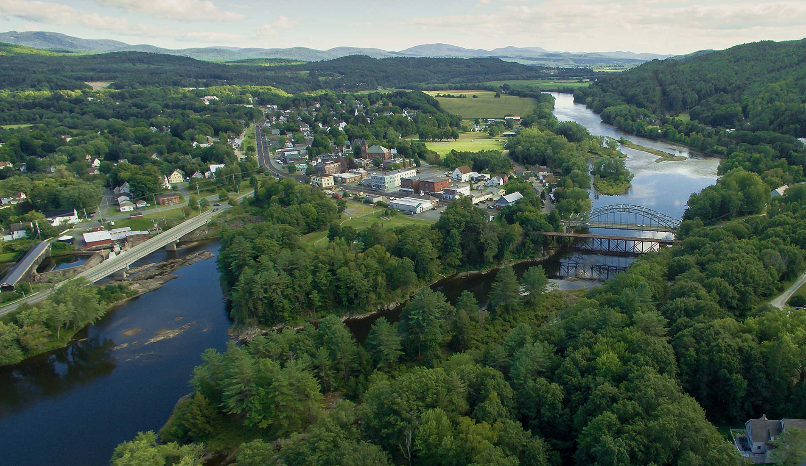
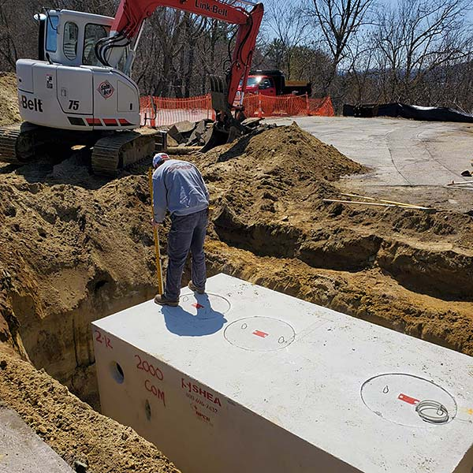

01
Inside the tank
Gravity separates the contents into three layers while clarified wastewater moves safely toward the field.

Third-generation installation, repair, pumping, and maintenance, done right across New Hampshire and Vermont.
From a routine pump-out to a complete installation, you work with people who know the land and stand behind the job.

A closer look at what happens underground—from the first pipe to the final return to the soil.
Gravity separates the contents into three layers while clarified wastewater moves safely toward the field.
The complete route: home to tank, tank to distribution box, then evenly into the drain field.
Patrick Boudreault started the business in 1952. Three generations later, the same name is still on the truck.
That history is practical. It means old system maps on file, familiarity with local soil and terrain, and a crew that plans to see you again around town.
Read the family storyWe serve homes, businesses, and municipalities on both sides of the Connecticut River.
Request serviceBath, Benton, Dorchester, Easton, Franconia, Glencliff, Hanover, Haverhill, Landaff, Lisbon, Lyman, Lyme, Monroe, North Haverhill, Orford, Pike, Piermont, Rumney, Warren, Wentworth, West Bath, Woodsville
Barnet, Bradford, East Corinth, East Ryegate, Fairlee, Groton, McIndoes Falls, Newbury, Ryegate, South Ryegate, Topsham, Washington, Wells River, West Newbury
The work is underground. The reputation is not.
“Perfect, precise work, super responsive, communicative, and transparent.”
“John prides himself on customer service and it shows. Great work, great service.”
“The work was done by experienced, knowledgeable employees. The cost was very fair.”
For military members, veterans, first responders, and seniors over 65.